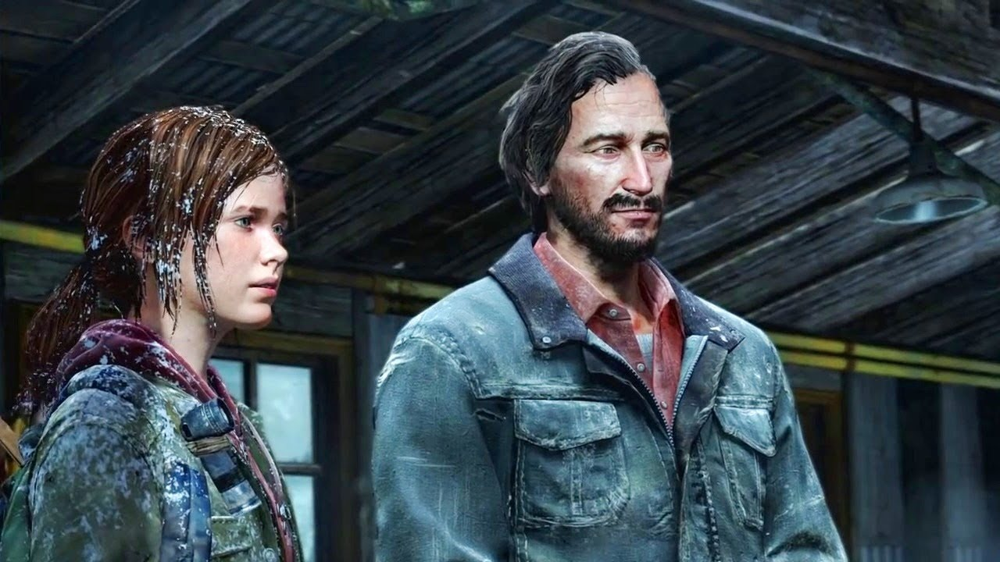

Personagens
Ellie
Uma das protagonistas do título, a narrativa do primeiro jogo gira em torno da segurança da garota de 14 anos. Joel recebe, sem muita animação, a missão de levá-la até os Vagalumes pois, segundo Marlene, ela é a chave para a cura do fungo que ameaça a humanidade.
Joel
Quando o surto do fungo cordyceps ocorreu, Joel levava uma vida normal e celebrava seu aniversário. De repente, tudo mudou na vida do outro personagem principal da trama. Com o tempo, Joel se distanciou de seu irmão Tommy, se juntou a Tess e virou um contrabandista.
Após encontrar Marlene em uma resolução de negócios nada amigável, ele recebe a missão de escoltar Ellie até os Vagalumes.
Sarah
A filha de Joel é a primeira personagem de The Last of Us que controlamos. Bem no início da infestação, ela preparou uma surpresa para seu pai e lhe deu um relógio.
Tommy
Irmão mais novo de Joel, Tommy esteve ao seu lado bem no início da infestação. Após alguns desentendimentos, voltam a se encontrar no futuro, com o protagonista cobrando favores para levar Ellie aos Vagalumes.
Tess
Tess é a primeira parceira interativa de Joel, que auxilia o personagem durante o gameplay. Sua participação na narrativa é de extrema importância pois ela participa de parte da “escolta” de Ellie.
Marlene
Após Joel e Tess lidarem com Robert, que supostamente interveio no fornecimento de armas da dupla, Marlene é a porta-voz da imunidade de Ellie. A líder dos Vagalumes confia a Joel a guarda temporária da garota para que ela chegue em segurança ao quartel-general.
Bill

Mais um personagem de The Last of Us que deve favores a Joel. Logo após lidarem com algumas perdas, os protagonistas o encontram em sua “fortaleza” para pedirem um carro e seguirem a sua busca aos Vagalumes.
Harry e Sam
Após escaparem de uma emboscada em Pittsburgh, Ellie e Joel encontram os dois irmãos tentando sobreviver aos perigos da infestação. Após um desentendimento devido às escolhas de Henry, formam um quarteto que se desfaz pouco antes da dupla seguir viagem rumo à base dos Vagalumes.
David

Após Ellie ter negociado medicamentos com David – para que pudesse tratar os ferimentos de Joel -, o personagem persegue a garota e a sequestra. Em seus aposentos, somos apresentados a uma população que tem sobrevivido comendo a carne de outros humanos.